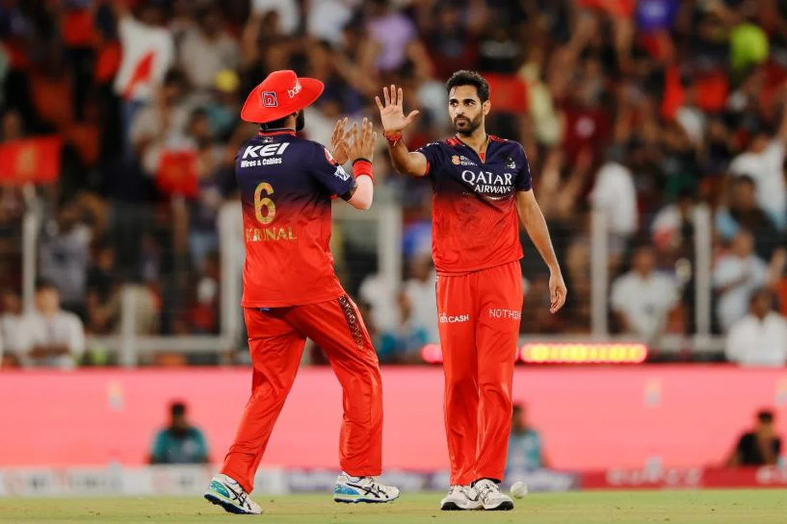
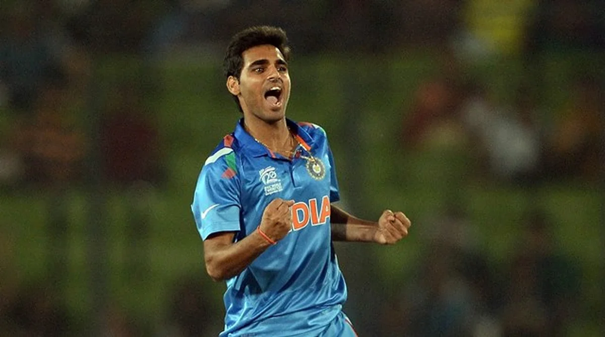

The Man India Forgot
There's a particular kind of loneliness in sport that doesn't get talked about nearly enough. It's not the loneliness of losing. It's the loneliness of being brilliant, knowing you're brilliant, having the numbers to prove you're brilliant, and watching the world move on like you don't exist.
That's where Bhuvneshwar Kumar is right now. And if that doesn't bother you even a little bit, you probably haven't been paying attention to what he just did.
This is a man who just finished an IPL season with 28 wickets in 16 matches. A man who helped Royal Challengers Bengaluru win their second consecutive IPL title. A man who crossed 350 career T20 wickets this season, a milestone that most bowlers can only dream about reaching.
And when India announced their squad for the Afghanistan series starting this week, Bhuvneshwar Kumar's name was nowhere on the list. Again.
Four years now. Four years since he last wore the India jersey. And somehow, despite everything he's done in those four years, the phone still hasn't rung.
What Bhuvi Actually Did This Season

Let's talk numbers for a moment, because the numbers are kind of ridiculous.
In IPL 2026, Bhuvneshwar Kumar didn't just contribute. He was one of the primary reasons RCB managed to do something only Mumbai Indians and Chennai Super Kings had done before them. He bowled in the powerplay and made batsmen look uncomfortable. He bowled at the death and made batsmen look foolish. He did the two hardest things a fast bowler can do in T20 cricket, and he did both of them consistently for two straight months.
RCB's coach Andy Flower said it publicly after the title win: Bhuvneshwar's experience and his ability to perform under pressure in the big moments were "instrumental" in defending the championship. Not "helpful." Not "useful." Instrumental.
This wasn't a bowler having one good game in the playoffs and riding the wave. This was a bowler who showed up in Match 1 and was still showing up in the final, two months later, game after game, pressure situation after pressure situation. The kind of consistency that separates professionals from legends.
Bhuvneshwar Kumar reached 350 career T20 wickets during IPL 2026, placing him among the most prolific T20 bowlers in Indian cricket history. He took 28 wickets in 16 matches this season alone, averaging nearly two wickets per game.
Four Years Since the Last India Cap
The last time Bhuvneshwar Kumar played international cricket for India was in 2022. Take a second and think about what that means.
In 2022, Shubman Gill was still finding his feet. Suryakumar Yadav was just beginning his transformation into a T20 sensation. Vaibhav Suryavanshi was eleven years old. The cricketing world has changed completely since Bhuvneshwar last put on the blue jersey, and somehow he's still here, still performing, still proving that class doesn't have an expiry date.
But Indian cricket has a way of moving forward that can feel almost cruel in its efficiency. Once the selectors decide they've moved on from you, the door doesn't just close. It locks. And it doesn't matter how loudly you knock from the other side.
Bhuvneshwar isn't the first player to experience this. Indian cricket has a long history of bowlers who were discarded before their time was truly up. Zaheer Khan had to fight his way back in. Ashish Nehra was written off multiple times before his farewell at Kotla. Sreesanth never got a second chance at all. The system is built for the next generation, and the current one is expected to step aside gracefully, regardless of what their body and their form are telling them.
Why the Selectors Won't Pick Up the Phone
Here's where things get complicated, because the selectors aren't entirely wrong. Their logic makes sense on paper, even if it feels wrong in your gut.
India's fast bowling stocks have never been deeper. Jasprit Bumrah is a generational talent. Mohammed Siraj has become a genuine wicket-taker across formats. Arshdeep Singh owns the death overs in T20Is. Mukesh Kumar, Prasidh Krishna, Akash Deep, and a dozen other young quicks are all fighting for spots. Bringing back a 36-year-old, no matter how good his IPL numbers are, means shutting the door on someone younger who might serve the team for the next decade.
That's the calculation. It's cold, it's mathematical, and it's the kind of thinking that wins World Cups in the long run. You don't build a team around nostalgia. You build it around the future.
But here's what that calculation doesn't account for: the present. The right now. The fact that India is about to play three ODIs against Afghanistan, then tour Ireland, then play England, and somewhere in that packed schedule, there's a squad rotation happening that could easily accommodate a man who just proved he's one of the best T20 bowlers in the country.
It's not about replacing Bumrah. Nobody is saying that. It's about recognizing that a man who took 28 wickets in the most competitive T20 league on the planet might, just might, still have something to offer at the highest level.
"His form is speaking for itself. If you're taking 28 wickets in an IPL season at this stage of your career, you deserve to be in the conversation."Aakash Chopra, cricket analyst
The Thing He Said That Nobody Expected

This is the part of the story that genuinely surprised me.
After the IPL final, after the celebrations, after the confetti and the trophy and the champagne, someone asked Bhuvneshwar Kumar the obvious question. Everyone was expecting it. Cameras ready, microphones pointed, the whole press room waiting for him to say what they assumed he'd say: "Yes, I want to play for India again. I hope the selectors are watching."
He didn't say that.
Instead, Bhuvneshwar said something that carried more weight than any appeal to the selectors ever could. He said he's not thinking about a comeback. That he's stopped setting long-term goals because that approach hasn't worked for him in the past. That he's focused on enjoying his cricket, contributing to his team, and taking things one game at a time.
Read that again. A man with the talent, the form, and the numbers to walk into most international squads on the planet just told the world he's stopped hoping for it. Not because he can't. Because hoping became harder than performing.
That's not bitterness. That's not giving up. That's something else entirely. That's a man who's been around long enough to understand that some things in cricket aren't about your talent or your effort. They're about timing, politics, and decisions made in rooms you'll never be invited into. And instead of fighting a battle he can't win, he's chosen to pour everything he has into the battles he can.
What Bhuvneshwar Kumar Actually Taught Us
There's a version of this story where Bhuvneshwar Kumar becomes bitter. Where he retires dramatically, gives angry interviews, calls out the selectors on social media, and turns himself into a victim narrative that cricket Twitter would eat up for weeks.
He chose the other version.
The version where you keep showing up. Where you keep taking wickets. Where you help your team win championships and you celebrate like each one matters, even if the phone never rings. Where you let your bowling speak so loudly that people like Aakash Chopra, people who've seen thousands of cricketers come and go, feel compelled to publicly say you deserve better.
There's something deeply admirable about that, and it's the kind of thing that doesn't show up in career statistics or Wikipedia pages. It's the ability to find meaning in what you're doing right now, even when the thing you used to dream about has been taken off the table.
Bhuvneshwar Kumar is 36. He has 350 T20 wickets. He has two IPL championship medals. He has the respect of every single person who understands cricket at any meaningful level. And he has something that most people who lose their dream never find: peace with it.
Will India call? Maybe. The Afghanistan series would be a perfect low-stakes opportunity to bring him back. The Ireland T20Is even more so. There are voices growing louder, analysts demanding it, fans campaigning for it. Maybe the selectors listen. Maybe they don't.
But here's what matters: Bhuvneshwar Kumar has already won the argument. Not because the selectors changed their mind. But because he stopped needing them to.
Some cricketers chase records. Some chase trophies. Some chase the India cap like it's the only thing that gives their career meaning. Bhuvneshwar Kumar stopped chasing. And somehow, that made his story the most compelling one in Indian cricket right now.
📷 Image Credits: Images via BCCI/IPL
Frequently Asked Questions
Why isn't Bhuvneshwar Kumar in the Indian team?
Bhuvneshwar Kumar last played for India in 2022. Despite taking 28 wickets for RCB in IPL 2026 and helping them win back-to-back titles, the Indian selectors have not recalled him. The team has moved towards younger pace options, though many experts believe his form and experience still warrant selection.
How many wickets did Bhuvneshwar Kumar take in IPL 2026?
Bhuvneshwar Kumar took 28 wickets in 16 matches during IPL 2026, playing a crucial role in RCB's back-to-back title win. He also reached the milestone of 350 career T20 wickets during the season.
Does Bhuvneshwar Kumar want to play for India again?
Bhuvneshwar Kumar has publicly stated that he is not actively thinking about an India comeback. He has said he no longer sets long-term goals and is focused on enjoying his cricket and contributing to his team's success.
Which IPL team does Bhuvneshwar Kumar play for in 2026?
Bhuvneshwar Kumar plays for Royal Challengers Bengaluru (RCB). He joined the franchise in 2025 and has been instrumental in their back-to-back IPL title wins in 2025 and 2026.
How many T20 wickets does Bhuvneshwar Kumar have?
Bhuvneshwar Kumar crossed the milestone of 350 career T20 wickets during the IPL 2026 season, making him one of the most experienced T20 bowlers in Indian cricket history.